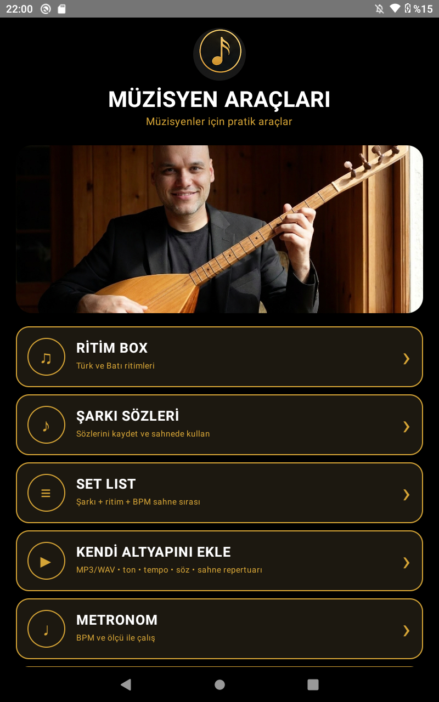
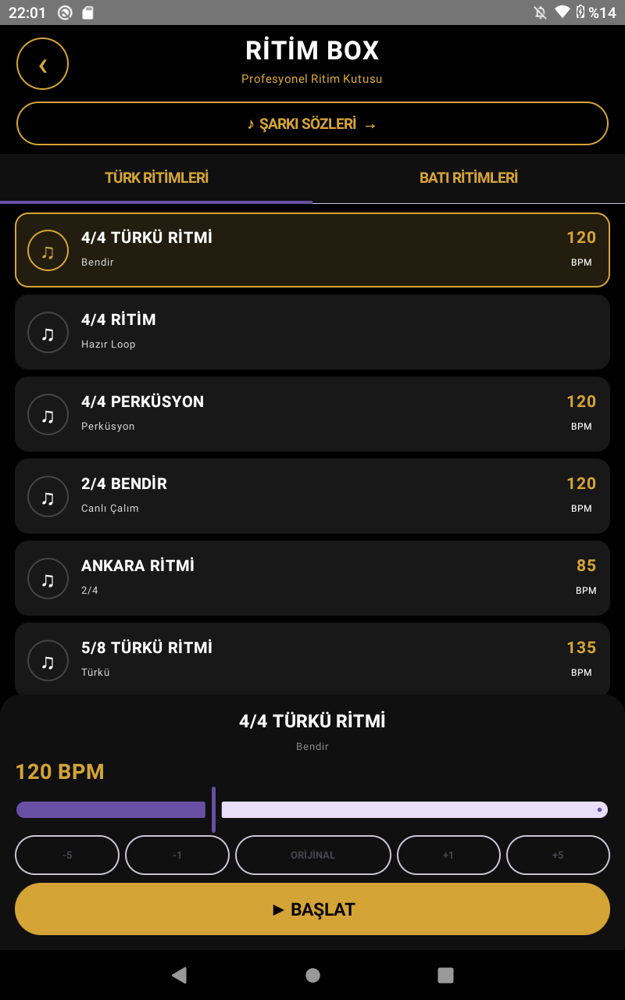
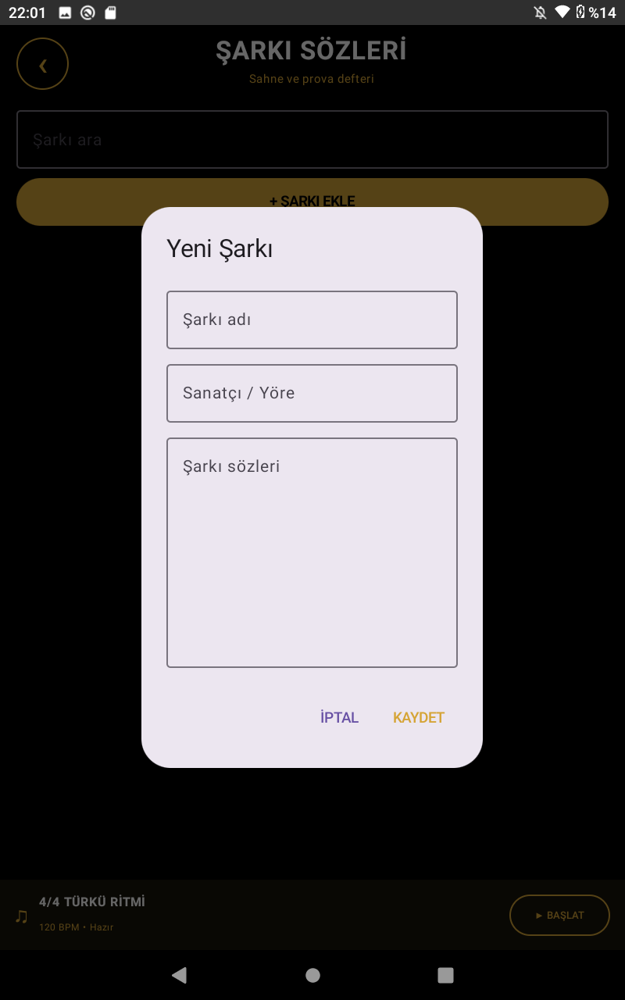
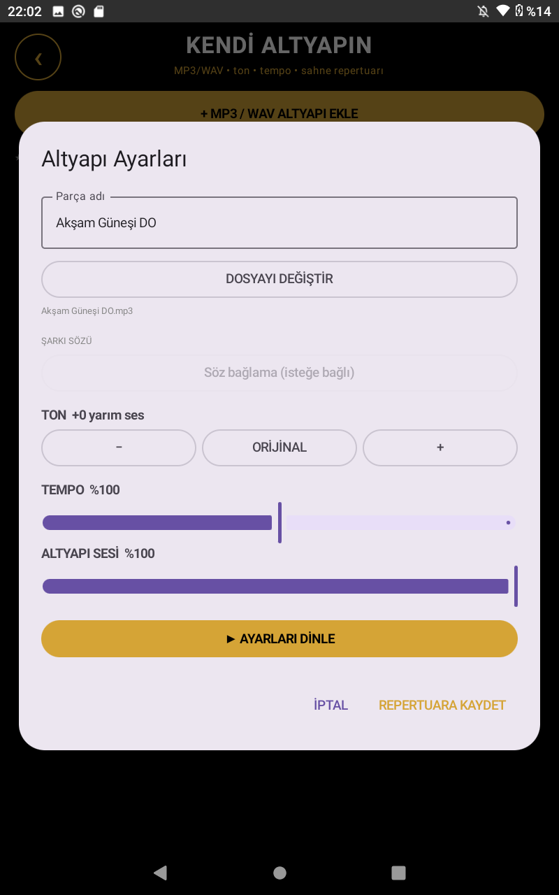
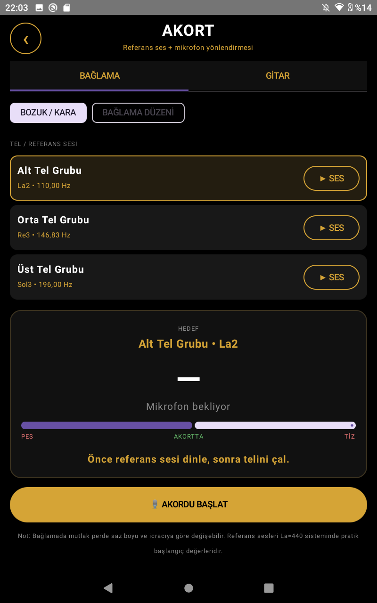

MÜZİSYEN ARAÇLARI PRO
Sahne, prova ve günlük müzik çalışmaları için ritimlerden kendi altyapına, şarkı sözlerinden akort ve metronoma kadar pratik araçlar tek uygulamada.
Müzisyen için tek merkez
Sahnede ihtiyaç duyduğun temel araçları farklı uygulamalara dağılmadan yanında taşı.
Türk ve Batı ritimleri, BPM ve pratik kontrol seçenekleri.
Sözlerini kaydet, düzenle ve prova ya da sahnede hızlıca aç.
Parçalarını sahne sırasına göre düzenleyerek repertuarını hazır tut.
MP3/WAV altyapı ekle; ton, tempo ve repertuar ayarlarını yönet.
BPM ve ölçü ile düzenli çalışma desteği.
Bağlama ve gitar için referans sesleri ve mikrofon yönlendirmesi.
Pratik ve nota çalışmaları için uygulama içi piyano.
Parçalarını kaydet, tam sayfa görüntüle ve gerektiğinde düzenle.
Uygulamadan görüntüler
Siyah-altın arayüz, sahnede uzaktan okunabilirlik ve hızlı erişim düşünülerek tasarlandı.





ISMAIL EROL MUSIC
Müzisyen Araçları Pro, müzisyenlerin prova ve sahne iş akışlarını daha pratik hale getirmek amacıyla geliştirilen bir müzik araçları uygulamasıdır.
Gizlilik Politikası
Google Play mağaza sayfasında kullanılabilecek temel gizlilik sayfası.
Verilerin kullanımı
Müzisyen Araçları Pro'nun temel işlevleri cihaz üzerinde çalışacak şekilde tasarlanmıştır. Kullanıcının uygulamaya kendi isteğiyle eklediği şarkı sözleri, repertuar bilgileri ve ses dosyaları uygulamanın işlevlerini sağlamak amacıyla kullanılır.
Mikrofon
Akort özelliği kullanıldığında mikrofon erişimi, çalınan sesi analiz ederek akort yönlendirmesi sağlamak amacıyla kullanılabilir.
Dosyalar ve ses içerikleri
Kullanıcının seçtiği MP3/WAV dosyaları, kendi altyapı özelliğinin çalışması için işlenir. Kullanıcı kendi eklediği içeriklerin kullanım haklarından sorumludur.
Değişiklikler
Uygulamanın özellikleri geliştikçe bu gizlilik politikası güncellenebilir. Yayın öncesinde Google Play Veri Güvenliği beyanının uygulamanın gerçek davranışıyla eşleştirilmesi gerekir.